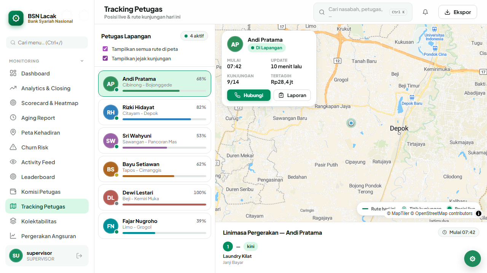
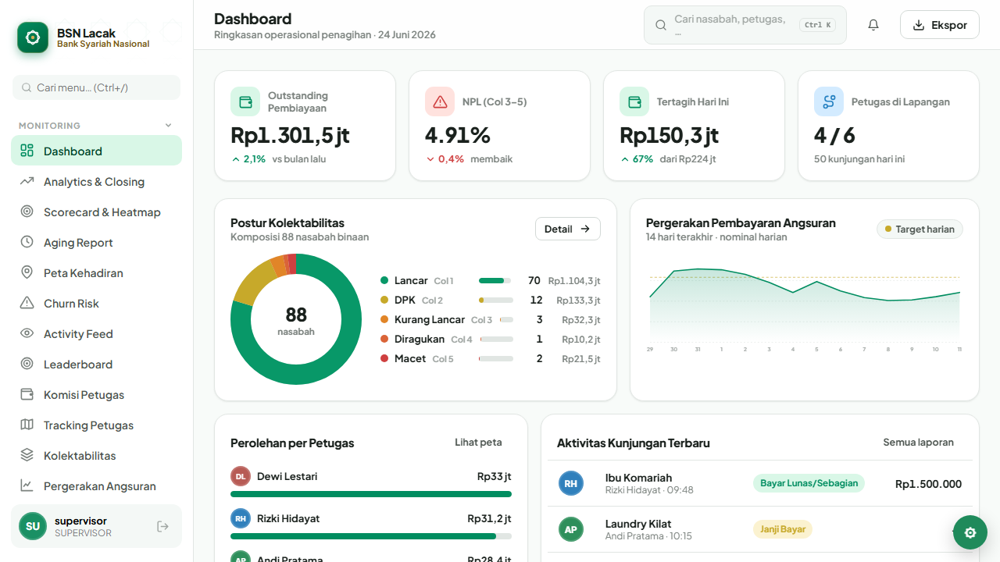
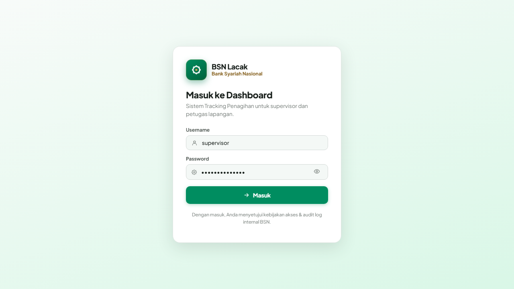
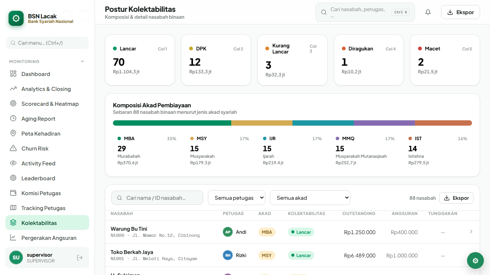
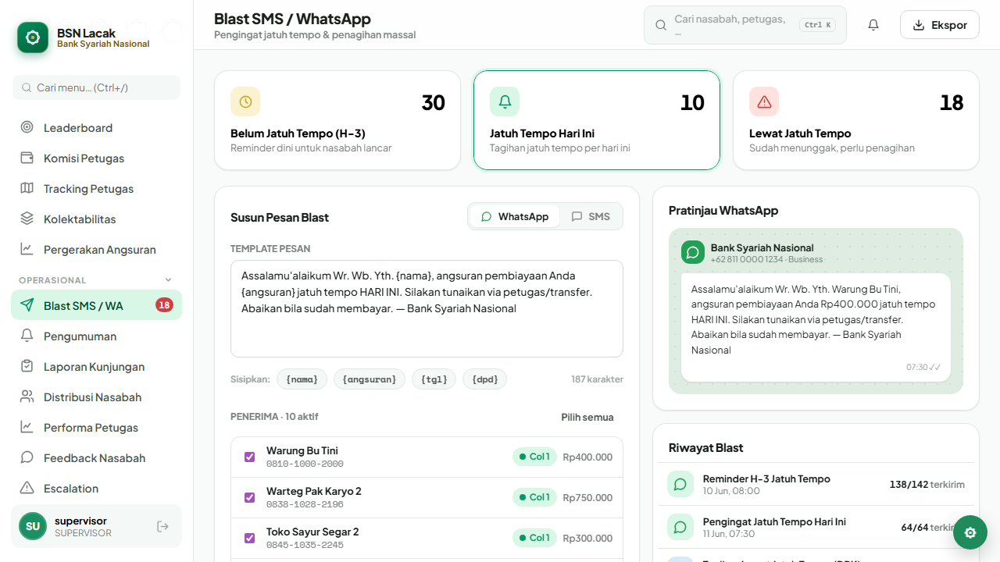
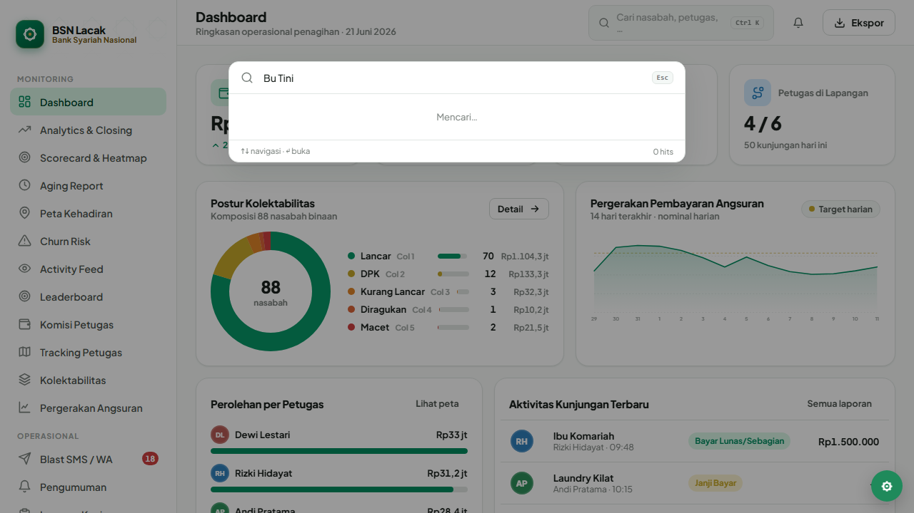
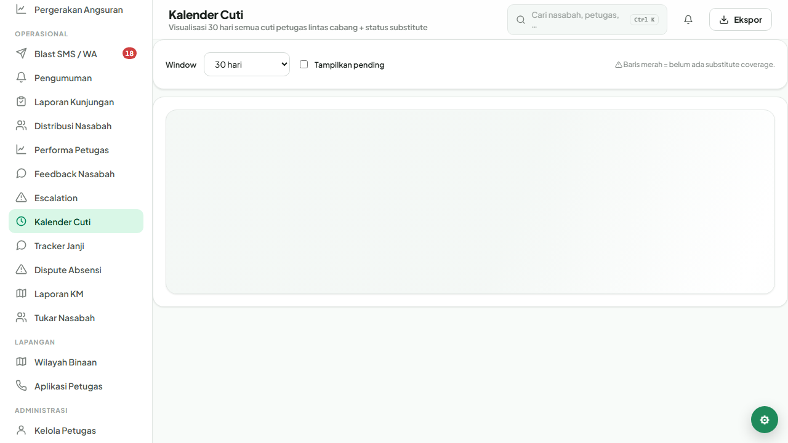
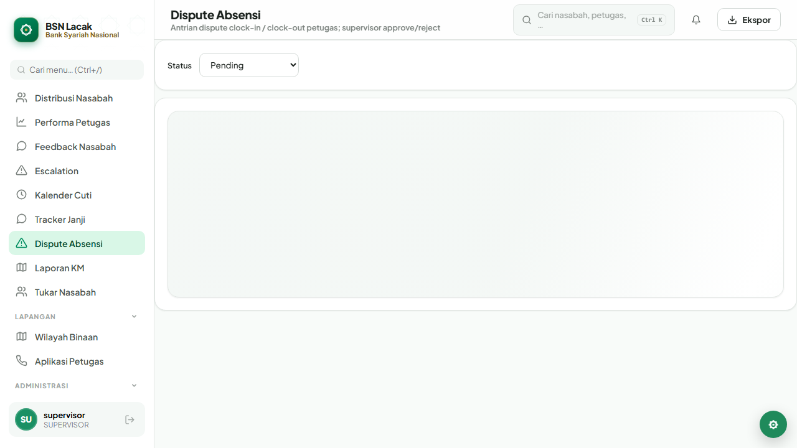
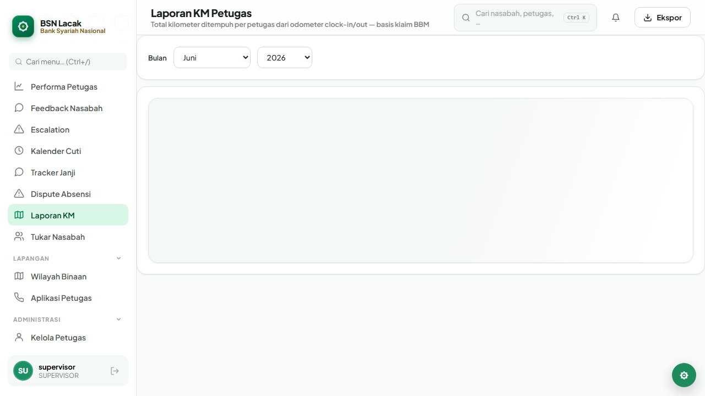
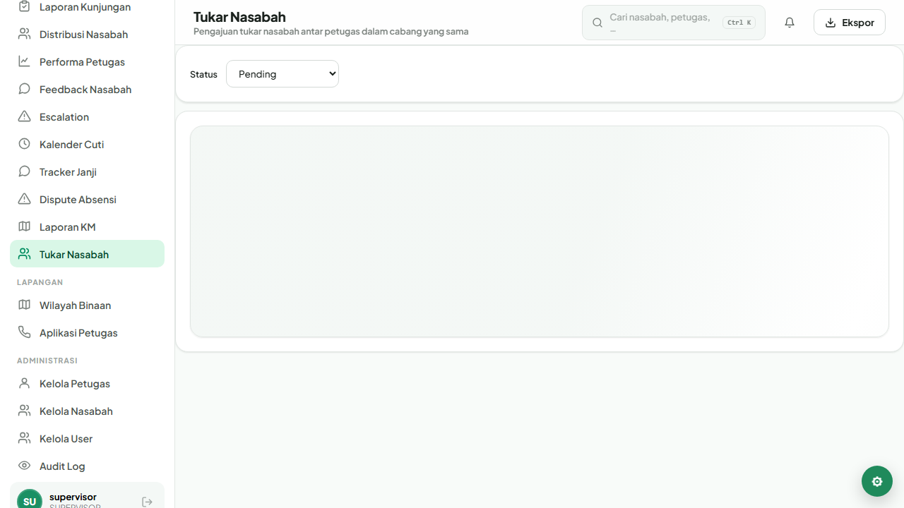

Arsitektur sistem dan kelebihan platform penagihan lapangan Bank Syariah Nasional — dashboard supervisor multi-cabang + PWA petugas dengan GPS streaming, anti-fraud server-side, dan antrian offline.
Operasional collector kerap berjalan tanpa kontrol real-time dan bukti yang sulit diverifikasi. BSN Lacak dirancang untuk menutup gap itu di satu platform terpadu.
Supervisor mengandalkan laporan harian; tidak tahu siapa di lapangan sekarang dan jalur kunjungannya.
Foto bisa diambil di rumah, lalu di-edit timestamp/EXIF — sulit dideteksi tanpa pipeline anti-fraud.
Aplikasi konvensional kehilangan input ketika koneksi putus saat collector di pelosok atau basement.
Tanpa tenancy yang kuat, data antar cabang bocor — pelanggaran privasi dan kepatuhan.
Tiga lapis terpisah — klien PWA, API stateless, dan data store — diorkestrasi via Docker Compose, di depan reverse proxy Caddy ber-TLS.
Pilihan teknologi mengutamakan ekosistem matang, footprint kecil, dan kemudahan transfer pengetahuan ke tim internal BSN.
TLS di Caddy (Let's Encrypt otomatis), HSTS, CSP default-src 'none',
rate-limit per IP (auth 10/15m, API 600/15m), CORS sempit ke WEB_ORIGIN.
JWT akses 15 menit + refresh 7 hari di cookie httpOnly Secure SameSite=Strict. Refresh di-hash SHA-256, rotasi tiap pakai, reuse detection mencabut seluruh keluarga sesi.
Role-based (ADMIN / SUPERVISOR / PETUGAS) + row-level branch tenancy di setiap
query. ADMIN HQ pakai header x-branch-id untuk berpindah cabang.
Validasi Zod di semua endpoint mutasi · magic-byte check + 8 MB/file · watermark server-side (sharp) sebelum simpan disk · rate-limit POST /kunjungan per user.
Pino dengan PII masking (nama nasabah, HP, koordinat tidak masuk log) · AuditLog untuk login/reuse/reassign/blast/auto-balance · retensi 365 hari + arsip.
Policy 12+ karakter mix · bcrypt cost 12 · force-change first login · 5× salah → lock 15 menit · semua sesi dicabut saat ganti password.
Jarak antara titik upload dan alamat nasabah > 200 m → flag far-from-address. Mendeteksi laporan yang difile dari rumah / kantor.
Bila DateTimeOriginal > 1 jam atau hilang → flag stale-photo.
Memblok foto galeri lama yang diambil ulang.
Pergerakan antar posisi GPS > 150 km/jam → flag impossible-speed. Indikasi spoofer / mock location.
Header file diverifikasi (file-type), lalu sharp menempel watermark
"BSN Lacak · petugas · nasabah · jam · GPS" — tidak mempercayai klien.
Service Worker + localStorage queue membuat aplikasi petugas berperilaku seperti aplikasi native — tidak ada laporan yang hilang gara-gara basement, lift, atau desa tanpa sinyal.
Foto + GPS + form disimpan dulu ke localStorage queue. Form tahan tab-kill (Android camera intent tidak menghapus state).
Setiap upload masuk antrian dengan retry exponential. Pengguna melihat badge "menunggu sinyal" di kartu kunjungan.
Saat online kembali, worker auto-flush ke API. Watermarking tetap dilakukan di server — klien tidak bisa memalsukan stamp.

Overlay jejak kunjungan — bukti rute kembali tersinkronInvalidate cache di klien hanya saat ada perubahan nyata (kunjungan baru, review berubah, posisi GPS baru). Hemat baterai, hemat kuota, hemat DB.
Setiap query Prisma menyertakan branchId dari konteks user.
SUPERVISOR cabang A tidak bisa melihat data cabang B — diuji di integration test.
ADMIN HQ dapat berpindah cabang via header x-branch-id.
Setiap perpindahan ter-audit, termasuk siapa, kapan, dari mana.
BigInt-safe nominal rupiah, optimistic locking di reassign nasabah, transaksi atomik untuk auto-balance round-robin.

Dashboard supervisor — KPI & pergerakan angsuran liveLima keunggulan yang membedakan BSN Lacak dari solusi tracking generik di pasar.
GPS plausibility, EXIF freshness, dan speed jump diperiksa di server — bukan di klien yang bisa dipalsukan. Risk score otomatis muncul di badge supervisor.
localStorage queue + service worker + watermark server-side. Petugas tetap bisa lapor di lokasi tanpa sinyal — sinkron otomatis saat online.
Row-level branch enforcement di setiap query — sudah diverifikasi dengan integration test Postgres asli di CI tiap PR.
Sekali docker compose up — semua service jalan: API, DB, Caddy,
backup, worker. Migrasi Prisma terversi di git, rollback aman.
SSE untuk invalidasi cache — dashboard supervisor selalu segar tanpa request loop yang menguras baterai HP atau biaya cloud.
AuditLog 365 hari + arsip .jsonl.gz, PII masking di log,
OpenAPI spec di /api/docs, e2e a11y test di CI.
| Aspek | Tracking generik | BSN Lacak |
|---|---|---|
| Bukti kunjungan | Foto mentah, mudah dipalsukan | Watermark server + 3 sinyal anti-fraud |
| Sinyal hilang | Form gagal, data hilang | localStorage queue + auto-sync |
| Multi cabang | Filter di UI saja | Row-level enforce di server + audit |
| Realtime | Polling 30 detik | SSE — push hanya saat ada perubahan |
| Deploy | Bergantung vendor cloud | On-premise / cloud · Docker Compose |
| Audit trail | Log umum, mudah hilang | AuditLog 365 hari + arsip gz |
| Notifikasi | Email saja | Web Push (VAPID) + SMS/WA |
Contoh layar nyata dari dashboard supervisor dan aplikasi petugas — screenshot dihasilkan otomatis oleh skrip Playwright.

Login — 2FA opsional, force change password di login pertama
Kolektabilitas — Col 1–5, filter per akad syariah
Blast — 3 segmen target, template editor, preview & cancel
Global search (Ctrl+K)
Kalender cuti
Dispute absensi
Laporan KM kendaraan
Tukar nasabah antar petugasSetiap PR: typecheck, build, npm audit, docker build, unit + integration test (Postgres asli), E2E Playwright Chromium, ESLint jsx-a11y.
OPERATIONS.md berisi prosedur insiden, rotasi credential, restore drill,
eskalasi. DEPLOYMENT.md berisi runbook deployment + rotasi secret.
BSN Lacak menyatukan kontrol supervisor, kenyamanan petugas, dan keamanan kelas perbankan dalam satu platform yang dapat di-deploy on-premise. Mari diskusikan pilot di cabang prioritas.